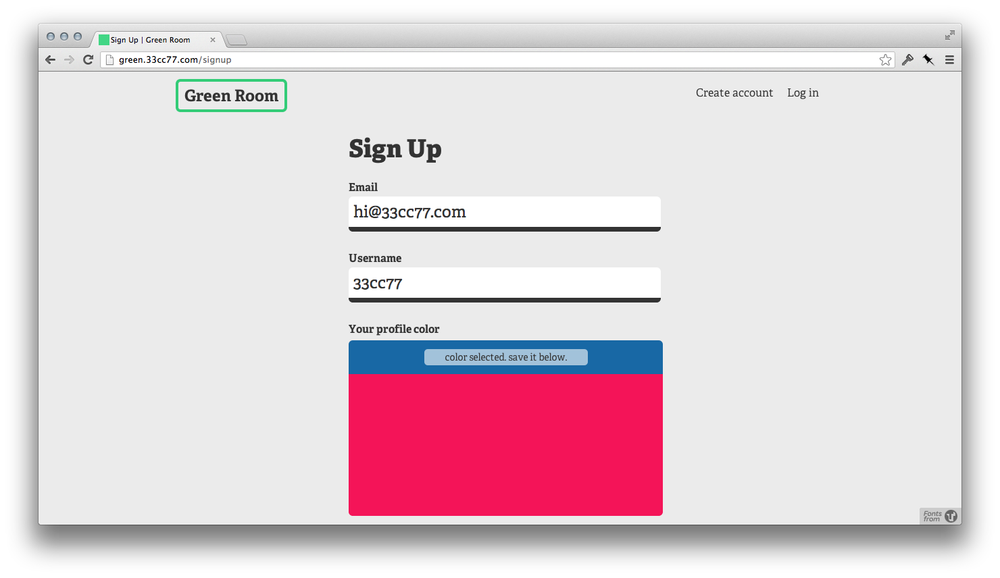
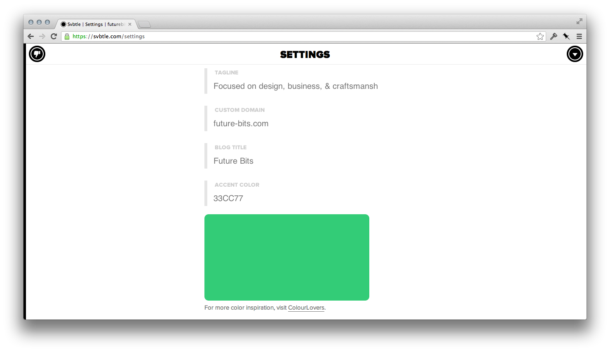

Most people can't grasp RGB, CMYK, & HEX. This color picker is for them.
Download Colorplane Colorplane on Github
Dependency: jQuery (but you can easily edit it to use another library)
Colorplane was created for Green Room, a private group chat tool we built to share with our friends. Instead of avatars, users are represented only by a color. (green.33cc77.com)
Writers on Svbtle choose a color to represent their profile. In the past, writers had only a text field where they could input a HEX code. Now the writers can use a Colorplane to find just the right color. (svbtle.com)
